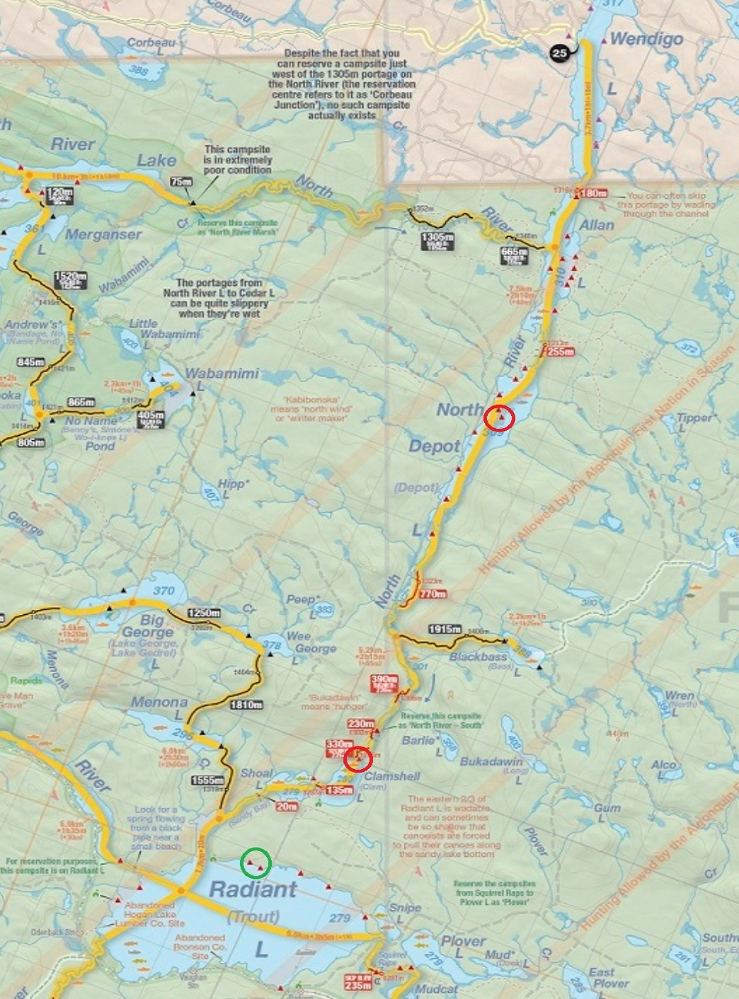

Day 1: Wendigo-Allan-North Depot-North River-Clamshell
Day 2: Clamshell-Shoal-Radiant-Shoal-Clamshell-North River-North Depot
Day 3: North Depot-Allan-Wendigo
Campsites circled in red, lunch site on day 2 circled in green


 |
2018 July 6-8 - Wendigo to Radiant from Access Point 25 Day 1: Wendigo-Allan-North Depot-North River-Clamshell Day 2: Clamshell-Shoal-Radiant-Shoal-Clamshell-North River-North Depot Day 3: North Depot-Allan-Wendigo Campsites circled in red, lunch site on day 2 circled in green |
|
Heading out from the access point on Wendigo lake, really strong tailwind so we flew down to the first portage to Allan lake (and technically where we enter the park). Felt bad for the guy who was paddling out. |
|
Really nice site on Clamshell lake, its the only site on the lake and it was a nice warm blue sky day, did some solo paddling. |
|
Good view of the site, we didn't really feel like trying out the rope swing in case it broke, but the water was really deep just off the edge of the site. |
|
Also did some nice swimming. |
|
Paddled down to Radiant lake for lunch on day 2, some really nice beach sites along the north shore, however the lake is really shallow on this shore so there was a lot of poleing to go along with the paddling. Next time maybe we push all the way to Radiant to camp, didn't see anyone else on the lake at all. |
|
Island campsite on North Depot lake on day 2, a bit windy but still nice and sunny, decent site and we went for a quick dip before dinner. Katie made a really awesome strawberry short cake type dessert. Portages were a bit buggy tho, and the amount of horseflies and deerflies buzzing around the access point when we left made it almost unbarable to secure the canoe. |